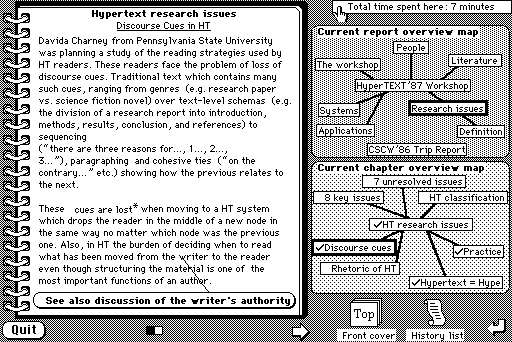
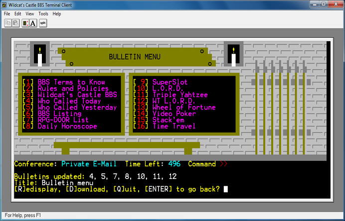
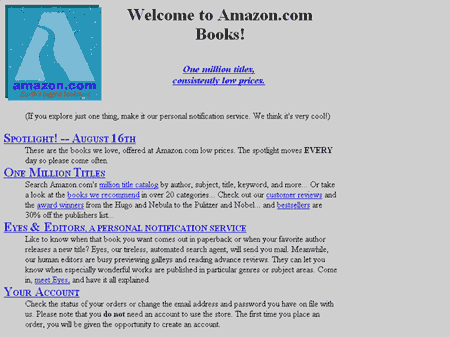

AngularJS
What HTML would have been if it had been designed for building web applications
Tim Cunningham
@TimCunningham71 twitter
Vice President of Operations at IDMI
Adobe Community Professional
Codebass Radio
Bolttalks.com
CFmumboJumbo.com
- JavaScript Magic for building Web Apps
- Pure JavaScript
- Open Source (@github, MIT)
- Google Funded
Why is web development hard?
A bit of history...

Markup language for scientific documents
shared over the net.
CERN Physics - Tim Berners-Lee
B52's, Bangles



Scripting language
for HTML documents.

Dialup- Prodigy, MSN, Earthlink, *maybe* AOL
Coolio's Gangster Paradise, "Buddy Holly" by Weezer


Amazing apps,
despite the primitive building blocks.

HTML and JavaScript have improved,
but the level of abstraction is same as in 1989.

So you are
saying that
jQuery sucks?!?
NO! NO! NO!
We <3 jQuery!
(for DOM manipulation)
Building webapps
is a lot more than
DOM manipulation!
AngularJS increases the
level of abstraction.
jQuery "just" allows you type less.
Documents don't need to be tested,
web-apps do!
AngularJS takes care of most DOM manipulation
- Dom based templating - Take HTML and extend it with "directives" and Add doubly curly as a databinding
- Take HTML & let the browser parse it
- Browser creates the DOM tree
- Traverses the DOM tree in the browser and figure out where the data bind points are.
<ul>
<li ng-repeat="person in people">
Hello, <b>{{person.fullname}}</b>!
</li>
</ul>
- ng-repeat is a $compile directive
- Each member of the JSON array people and puts it into a temporary variable called person
- person.fullname is the databinding this is what the compiler understands and looks for, the {{}}
- Updates value from the model is
- DOM based templating much faster than string based.
- AngularJS was the first DOM based
- Knockout.js & batman.js have recently converted
Strict separation between
application logic
and
DOM manipulation
- Fancy term for "Keep an eye on the model & do stuff when it changes"
- Handles event listeners
- Handles asynchronously
- Checks when all changes are done
- Updates view
- Websockets note
Inversion of control
and
removal of global state
Work in safe scopes and inject those scopes into functions
- AngularJS gives you the power to extend HTML’s syntax with your own elements, attributes that adds behavior or transforms the DOM.
- Want to write<tab>, <calendar>, or <colorpicker> instead of <div><div><div>...?
- Want to attach keyboard shortcuts to any element by adding an attribute like key=’ctrl-s’?
- You miss the <blink> tag?
- All these things and more are possible.
- AngularJS lets you switch sub-views in your app with a simple route configuration.
- And you get URL deep-linking for free.
angular.module('phonecat', []).
config(['$routeProvider', function($routeProvider) {
$routeProvider.
when('/phones',
{templateUrl: 'partials/phone-list.html',
controller: PhoneListCtrl}).
when('/phones/:phoneId', {templateUrl:
'partials/phone-detail.html',
controller: PhoneDetailCtrl}).
otherwise({redirectTo: '/phones'});
}]);
AngularJS has the following baked in:
✓ unit / integration testing
✓ end-to-end testing
Test runner for javascript
Testacular is framework agnostic - you can run any JS code. Provided an adapter for Jasmine
Control the whole workflow from command line or your IDE
find and address performance bottlenecks
visualize and debug applications
Use experimental Chrome APIs
- HTML & JS will be around for a few more years
- HTML5 and ES5+ address low level issues and improvements
- w3c is not addressing high level issues related to web-development
- Increase the level of abstraction
- Helps to make your app testable
- HTML / JS / Browser & Developer friendly
- Pure JavaScript
- Pure Client-Side
- Two Components:
- HTML Compiler
- JavaScript Framework
- Tiny! (25kB)
Documentation improving fast.
Active mailing list
Past v1.0 (no more breaking changes)
Google uses internally
Now starting to use public facing